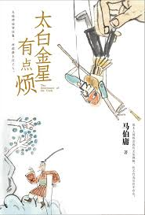

📖《太白金星有点烦》是马伯庸的幽默小说，以西游记为背景，从太白金星的视角重新解读西天取经的故事。将职场官场的逻辑融入天庭体系。
非常有意思的西游记解读，从官场职场角度出发，让人耳目一新。后来我看了西游记原著，发现原著的确有这样的官场韵味——只是小时候没读出来罢了。看完这本书再看西游记，会觉得"原来如此"。
马伯庸的脑洞一如既往地大。太白金星作为天庭的"中层干部"，处理各种关系、协调各方利益、应对上级指示，活脱脱一部职场生存指南。西天取经不只是取经，更是一场精心编排的"项目"，各路神仙妖怪都是利益相关方。这是一本能让你重新认识经典的书，也是一本让你会心一笑的职场寓言。